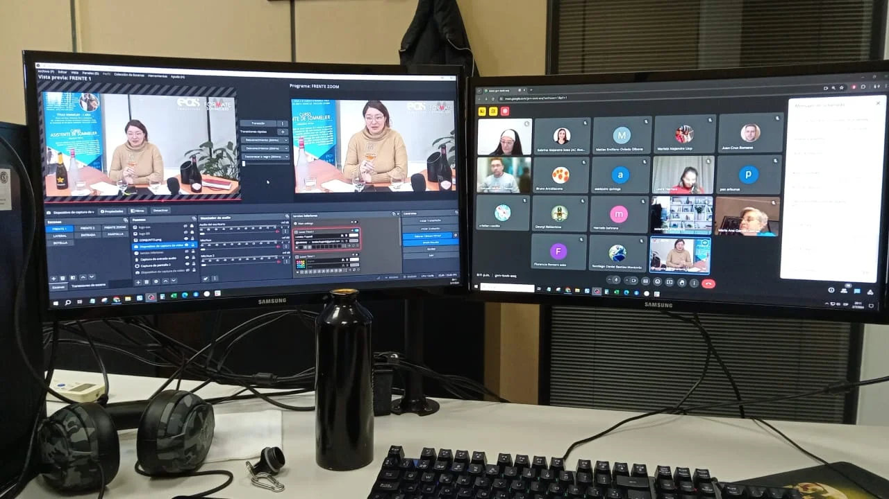

En el año 2022, inicie una etapa administrativa en mi carrera profesional. El primer paso fue introducir conocimientos y aptitudes en un proyecto puntual en Brainshock S.A. para el Ministerio de Trabajo, Empleo y seguridad Social.
Coordinación de tutores en Programa Nacional Fomentar Empleo. Docente para Proyectos en Programa Nacional Fomentar Empleo. Ministerio de Trabajo, Empleo y Seguridad Social de la Nación. Articulación y comunicación con proveedores. Presentación de balances. Confección de planillas e informes; solicitud, recepción y envío de documentaciones correspondientes. Control de Campus
Articulación y comunicación fluida con alumnos para el proyecto Formate Sommeliers. Transmisión por Meet de clases sincrónicas de la Carrera de Sommelier. Realización, distribución y seguimiento de cronograma, horarios y aulas; confección de planillas e informes; solicitud, recepción y envío de documentaciones correspondientes. Actualmente trabajo en el proyecto del Instituto Madero, donde a partir de 2026 se brindará la Tecnicatura Superior en Ciencia de Datos e Inteligencia Artificial
Algunas de las Webs donde estuve trabajando: Campus Virtual Brainshock, Formate Sommeliers, Campus Virtual Formate Sommeliers Antiguo, Campus Virtual Formate Sommeliers 2025.
